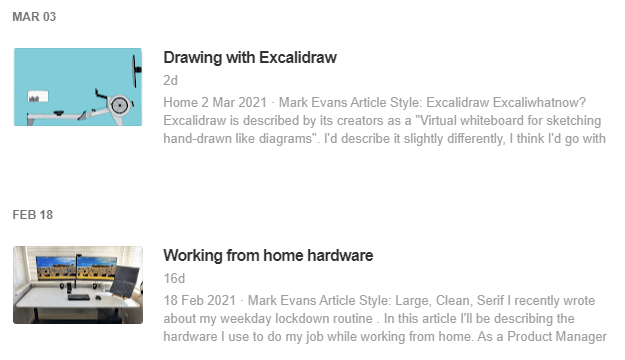

What is RSS?
RSS (Really Simple Syndication) is a web feed that allows users and applications to access updates to websites in a standardised, computer-readable format. These feeds can, for example, allow you to keep track of many (potentially, hundreds) different websites in a single news aggregator.
Below you can see an example of the contents of an RSS feed. It's simply a channel (e.g. your favourite news site), followed by a list of articles. Users of RSS never actually look at the feed (in the same way that you never see all the metadata associated with each e-mail you receive), it's not meant for people, it's meant for machines, i.e. the RSS aggregators.
<channel>
<title>OnlyRSS</title>
<link>https://onlyrss.org</link>
<description>The latest posts from OnlyRSS.org</description>
<item>
<title>Drawing with Excalidraw</title>
<link>https://onlyrss.org/drawing-with-excalidraw</link>
<description>Excalidraw is described by its creators...</description>
</item>
<item>
<title>Working from home hardware</title>
<link>https://onlyrss.org/working-from-home-hardware</link>
<description>I recently wrote about my weekday lockdown...</description>
</item>
</channel>
RSS aggregators
An RSS aggregator is similar to an e-mail client, but rather than e-mails, it aggregates articles. And like e-mail applications, some RSS aggregators are desktop apps, and others are online applications. Feedly and Inoreader are two popular online versions and both have similar capabilities.
Below is a screenshot of an RSS aggregator, you can see 11 articles from 4 different sources displayed in a simple list view (all published within the last 3 hours). It doesn't have to appear like this, for example, the list could include part of the article, or you could select to step through each article in turn (no different to the options you would get in any decent e-mail client). 
It's not just articles
For simplicity, so far I've only discussed articles, but RSS aggregators can do more than just show you the latest news. Below is a list of the various types of content that you can aggregate:
- Articles
- Blog posts
- Forum posts
- Videos e.g. YouTube
- Keyword search alerts e.g. Google\Bing etc.
- Newsletters
- Daily weather reports
- Podcasts
- Updates to documents e.g. Wikipedia, Confluence etc.
- Status changes e.g. parcel tracking, Jira tickets etc.
- Price alerts e.g. CamelCamelCamel etc.
…and it's not just aggregation
The basic requirement of an RSS aggregator is that it aggregates content via RSS feeds. But, much like e-mail clients, RSS aggregators tend to offer more than just this basic capability. In addition to aggregating content, RSS aggregators can offer other benefits, e.g.:
- Searching for feeds (so you don't have to hunt down the feed at the source website)
- Keyword search results e.g. allowing you to see all new Google results for a keyword search
- Deduplication i.e. remove or bundle together articles with similar content
- Prioritise content e.g. highlight all content that includes a certain keyword, or from a specific source.
- Mute content e.g. hide all content that contains a certain keyword or phrase like "Game of Thrones finale"
- Store all read content and index for search
- Tag content to be 'read later'
- Tag content as 'favourite'
- Group content into folders, or apply categories e.g. UX, DataViz, etc.
- Highlight sections of content and add notes
- Share content e.g. directly to social networks, as an e-mail newsletter, or even an RSS feed!
Summary
Hopefully I've managed to explain what RSS is, and also to convey some of the benefits of using an RSS aggregator. My original plan for this article was to also describe in detail how I use an RSS aggregator (specifically Feedly) to keep on top of my various interests, but I didn't want anyone reading this article to be overwhelmed and to lose sight of the one key takeaway i.e. RSS is a powerful tool for keeping on top of online content, and keeping your knowledge up to date.
If you have any comments on this article then please get in touch via Twitter (@dbs_sticky).